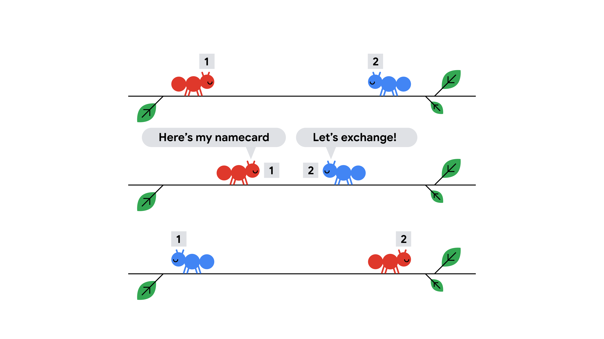

The original "Ants on a Stick" is a well-known math question. The insight is that two identical ants bouncing off each other can be thought simply as the ants passing through each other.
Limits are small in Test Set 1 so we can perform a simulation. First, we create an array of length $$$2\mathbf{L}$$$ as the stick - each unit is 0.5 cm. The reason we split into 0.5 cm instead of 1 cm is to simplify collision that happens on half a cm. Also note that one position may have 2 ants when the collision happens, so take that into account for your array data structure.
Then, place the ants on their respective starting positions. Now, we start to simulate with each iteration being half a second.
Look at each position starting from the left, if there exists some ants, there are 3 cases to handle.
Implementation tip: Use a new array to simulate the next iteration instead of modifying in-place. This makes it easier to understand and debug.
When there are no ants left on the stick, we sort the ants first by the time they fall, and then their ID.
The time complexity for this solution is $$$O(\mathbf{L}^2)$$$, as we need $$$O(\mathbf{L})$$$ time for each iteration and there are at most $$$O(\mathbf{L})$$$ iterations.
The space complexity for this solution is also $$$O(\mathbf{L}^2)$$$ if you use a new array for each iteration, but can reduce to $$$O(\mathbf{L})$$$ by reusing the arrays. We keep just two arrays - $$$A_{current}$$$ for the current iteration and $$$A_{next}$$$ for the next iteration. Once an iteration is completed, we copy $$$A_{next}$$$ into $$$A_{current}$$$ and clear the content of $$$A_{next}$$$.
For Test Set 2, $$$\mathbf{L}$$$ gets too large so our previous solution will not work. We will now make use of the "pass-through" property discussed in the background section. Think of each ant initially having their own ID card. Instead of bouncing off and changing direction, they actually just exchange ID cards and politely pass through each other. With this observation, the problem becomes finding the order of ants falling and reporting the ID card they possess at that time.

Now we want to find all events of exchanging ID cards. An event is defined by $$$(x_1, x_2, t)$$$, meaning $$$x_1$$$ and $$$x_2$$$ exchange ID cards at time $$$t$$$. For an ant $$$x$$$ facing right, the ants which $$$x$$$ will exchange ID cards with are all those on the right of $$$x$$$ and are facing left.
Once we have all the events of exchanging ID cards, we will sort them according to the time it happens. Suppose there are 2 ants that will exchange ID cards - $$$x_1$$$ with starting position $$$\mathbf{P_1}$$$ facing right, and $$$x_2$$$ with starting position $$$\mathbf{P_2}$$$ facing left. The time of the exchange is $$$(\mathbf{P_2}-\mathbf{P_1}) / 2$$$ seconds. Once we have the order of events, we will process each of them, by using an appropriate data structure (hash map or array with index as key) to keep track of the ID card possessed by each ant. Finally, we will have the ID cards of each ant of the time they fall off the stick.
Our last piece is to figure out the order of ants falling. This is relatively straightforward. For an ant facing left with starting position $$$\mathbf{P_1}$$$, the time of falling is $$$\mathbf{P_1}$$$. For an ant facing right with position $$$\mathbf{P_2}$$$, the time of falling is $$$\mathbf{L}-\mathbf{P_2}$$$. Finally, print out the ID cards of the ants in this order.
The time complexity for this solution is $$$O(\mathbf{N}^2\log \mathbf{N})$$$ to find all the events of exchanging cards and sorting them.
For Test Set 3, the additional observation is that just by the fact that there is an ant falling off the left end of the stick, we know it must be the current leftmost ant that is still on the stick. No exchanges of ID cards.
For each ant, using the pass-through property, find the time it falls off the stick and in which direction. In the end we should have an array of length $$$\mathbf{N}$$$ of $$$(t,d)$$$, meaning the time and the direction an ant falls off.
Finally, sort the ants by their starting position, and the fall off events by their time. For each fall off event, if it is on the left end, we print the ID of the leftmost ant and remove it, and vice versa for fall off event on the right end.
The time complexity for this solution is $$$O(\mathbf{N}\log \mathbf{N})$$$.